📅 调研时间范围：2026-05-02 至 2026-05-03。arXiv 周末投稿量较少，今日无符合时间要求的新论文。以下为近期补充研究（April 27-30）。
🎯 背景
大语言模型通过测试时计算扩展（TTS）在复杂推理任务上展现了卓越能力，但庞大的参数量和高昂的推理成本推动了模型剪枝方法的发展。已有研究表明，结构化剪枝（移除整个层块）会显著降低TTS推理性能。然而，非结构化剪枝（仅移除某些冗余或有害的权重）在推理LLM上的表现尚不明确。
💡 动机
作者希望重新审视"剪枝总是损害TTS性能"这一假设，探究非结构化剪枝是否也存在类似结构化剪枝的限制。如果非结构化剪枝能够保留甚至提升TTS性能，将为推理模型的轻量化部署开辟全新的技术路径。
🔧 技术点
1. 非结构化剪枝对比：在s1.1-7B和Qwen3-8B两个推理LLM上，对比Magnitude剪枝（按权重绝对值排序）和Wanda剪枝（基于激活范数与权重幅值的乘积）两种非结构化方法。2. 多基准TTS评估：在MATH500、AIME24、AMC23和GPQA-Diamond四个推理基准上，于512至8192 thinking token的五种预算下系统评估。3. 层间稀疏分配策略：对比均匀分配、OWL（基于异常值的层间稀疏度）和LayerIF（基于影响力函数的层间分配）三种策略对TTS性能的影响。
📈 收益点
非结构化剪枝在多数情况下不仅匹配未剪枝LLM的性能，甚至能超越原始模型——在Qwen3-8B上，Wanda-20%在AIME24和AMC23上取得最高约10%的性能提升。相比之下，结构化剪枝（ShortGPT）在所有基准上均出现显著退化。OWAL和LayerIF等非均匀分配策略在较弱模型（s1.1-7B）上能有效缓解Magnitude剪枝的退化，而Qwen3-8B对分配策略更具鲁棒性。
📝 总结
这项工作挑战了"剪枝必然降低TTS性能"的传统认知，证明精心设计的非结构化剪枝不仅能实现模型压缩，还可能成为提升推理效率与性能的双赢策略。彩票 Ticket 假说和泛化界理论为此提供了合理解释。
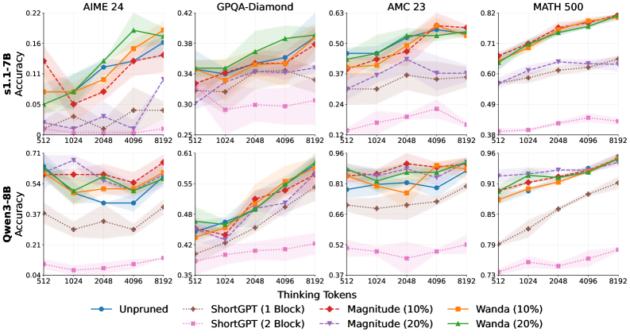
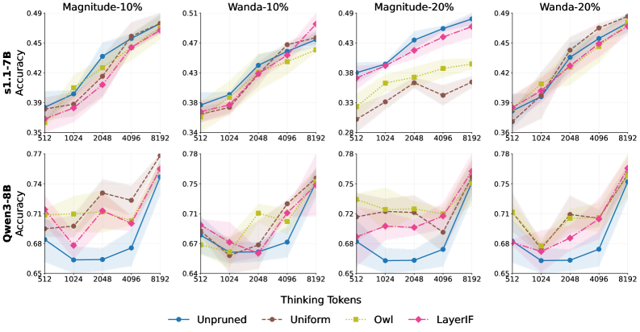
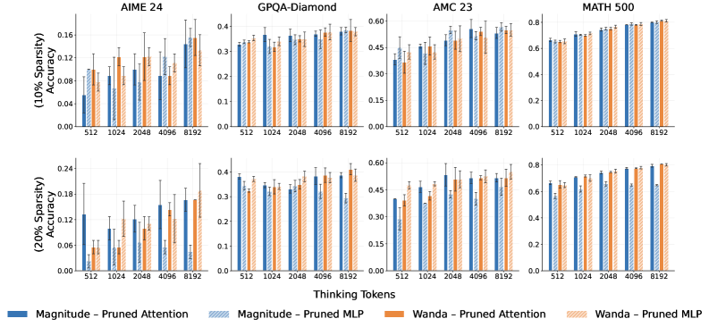
🎯 背景
链式思维（CoT）推理显著提升了LLM在数学和代码任务上的表现，但也带来了巨大的推理时计算开销。现有压缩方法主要聚焦于将显式推理替换为潜在状态或蒸馏缩短推理链，而对推理轨迹本身的token级信息结构关注甚少。
💡 动机
作者通过信息论分析发现，推理token可分为两类：低熵的"结构性token"（如"Wait, hold on"、"let us verify"等重复短语）和高熵的"有机token"（问题特定的数学表达式和推理内容）。结构性token一旦出现，后续续接几乎确定，这意味着大量token以极低的信息代价被逐个生成，存在显著的压缩空间。
🔧 技术点
1. 跨词BPE合并：对模型自身的推理轨迹应用SuperBPE合并，派生模型特定的"supertoken"，捕获高频结构模式。2. 结构化过滤：定义四类表面模式过滤器（大写短语起始、标点换行续接、逗号引导续接、空格前缀数字），确保合并产生语义连贯的推理短语。3. 轻量SFT适配：仅更新嵌入层、LM head和少量Transformer层，通过梯度钩子冻结基础词表嵌入，使模型学会使用supertoken生成更短的推理轨迹。
📈 收益点
在三个模型家族（QwQ-32B、Qwen3-30B-A3B、DeepSeek-R1-Distill-Llama-70B）和五个数学基准上，平均缩短推理轨迹8.1%，且没有任何模型-基准对的精度变化具有统计显著性。DeepSeek-R1-Distill-Llama-70B在AIME上实现最高17%的压缩。Supertoken还充当可解释的推理动作标注，能直观暴露模型的高级策略。
📝 总结
Shorthand for Thought首次从词汇层面对推理轨迹进行压缩，在不删除或修改任何推理步骤的前提下缩短表达长度。其结构性/有机性分解为推理过程的理解和控制提供了新的信息论视角，supertoken的语义可解释性也为RL训练中的奖励塑造和早期停止提供了诊断信号。
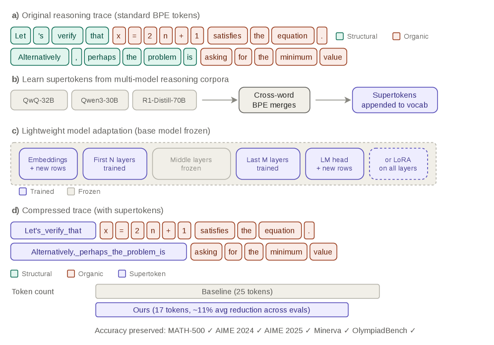
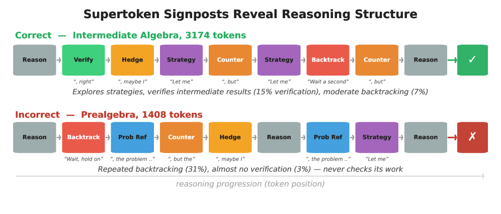
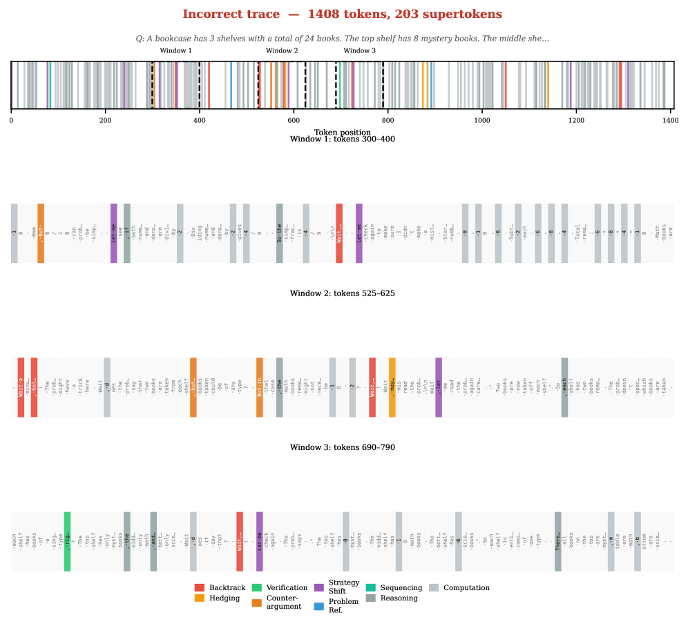
🎯 背景
深度剪枝通过移除整个Transformer块来提升LLM推理效率。现有工作主要沿两个轴线推进：设计重要性准则（如ShortGPT的BI分数、SLEB的层间输出相似度）和开发搜索算法（如进化搜索、贝叶斯优化、约束二进制优化）。多数工作隐含地将层冗余视为预训练网络的固有结构属性。
💡 动机
作者质疑"层冗余是模型固有属性"这一结构性观点，提出功能性视角：冗余由模型和评估目标共同决定。在困惑度下被判定冗余的层，对下游推理任务可能仍然关键。因此，寻找单一通用排名可能本身就不充分，需要目标条件化的冗余概念。
🔧 技术点
1. 子集选择形式化：将深度剪枝定义为组合优化问题 \(S^* = \arg\min_{|S|=k} \mathcal{L}(\mathcal{D}; \theta_0 \odot m_S)\)，明确冗余是 \((\theta_0, \mathcal{L}, \mathcal{D})\) 的三元函数。2. 双轴解耦实验：在LLaMA3/3.1 8B和Qwen3 8B上，固定目标（困惑度vs任务似然边际）变搜索算法，以及固定搜索算法变目标，系统分离两种因素的影响。3. 七种搜索算法面板：涵盖one-shot top-k、贪婪迭代删除、束搜索、先验引导遗传算法、先验引导贝叶斯优化、约束二进制优化和fast-block-select。
📈 收益点
三个核心发现支持功能性视角：(1) 不同目标产生定性不同的剪枝模式——困惑度下集中在中间到后期连续层，任务边际下则更分散；(2) 困惑度排名与下游准确率排名的Spearman相关系数范围从-0.78到接近零，大多数为负值，说明低困惑度不保证高准确率；(3) 固定目标下七种搜索算法的平均准确率差异仅1.1–3.3个百分点，搜索选择的影响远小于目标选择。
📝 总结
这项工作通过严格的控制实验揭示了深度剪枝中一个被忽视的关键因素：校准目标的设计比搜索算法的选择对最终性能有更大影响。其功能性冗余视角为剪枝实践提供了重要指导——与其投资复杂搜索，不如审慎选择与设计校准目标。
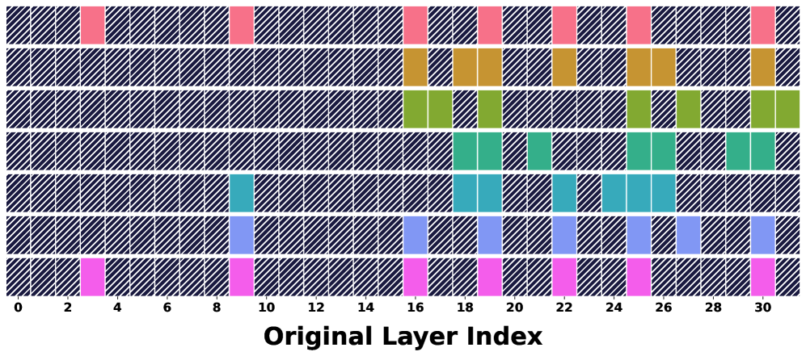
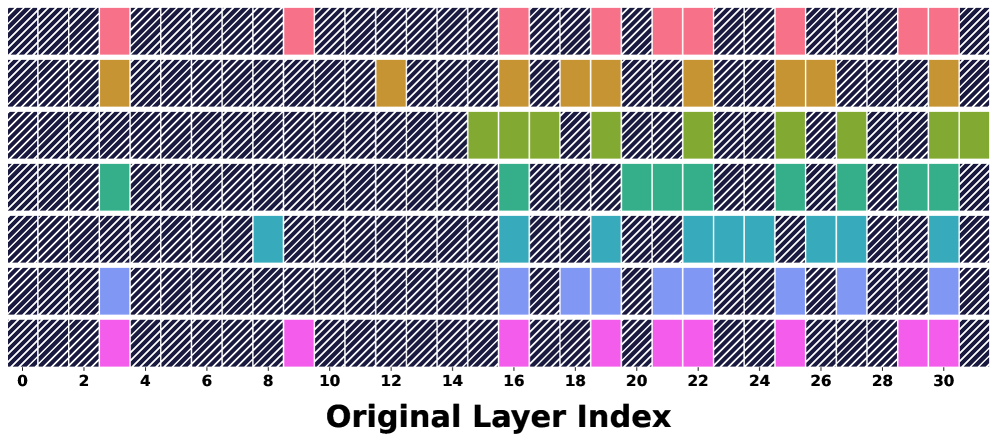
🎯 背景
潜在推理通过将中间推理压缩为连续表示，大幅缩短推理链，是替代显式CoT的高效方案。现有潜在推理方法主要聚焦于监督学习（如Latent-SFT），而强化学习在潜在空间中的应用仍然高度不稳定。Soft-GRPO虽提供了数学桥梁，但其无约束Gumbel探索导致灾难性模型崩溃。
💡 动机
直接将GRPO适配到潜在推理存在三个根本性瓶颈：(1) 潜在流形缺失——无约束探索将rollout推离有效潜在流形；(2) 探索-优化错位——Gumbel扰动密度导致正优势轨迹的组件可能被向下更新；(3) 潜在混合非闭包——联合强化多条正确路径可产生不属于任何有效路径的平均状态。
🔧 技术点
1. 无效样本优势掩码：仅将超过最大长度未终止的轨迹视为无效，在组归一化前将其排除，防止离流形rollout污染有效样本的统计量。2. 单侧噪声采样：对Gumbel噪声进行裁剪和正向偏移，确保扰动边距始终为正；当策略概率超过固定目标时，应用条件Straight-Through Estimator翻转梯度方向。3. 最优正确路径首token选择：在多条正确轨迹中，仅选择平均代理对数概率最高的轨迹的首个潜在token进行更新，避免共享前缀处的有害模式平均。
📈 收益点
在LLaMA-3.2-1B-Instruct和Qwen2.5-Math-7B上，Latent-GRPO在低难度任务上比Latent-SFT平均提升7.86 Pass@1点，推理链缩短4.44倍；在高难度任务上超越显式GRPO 4.27点，推理链缩短3.31倍，并在AIME基准上达到50+ pass@64。Gumbel采样下也保持强劲性能。
📝 总结
Latent-GRPO通过三个精心设计的组件解决了潜在推理RL训练中的核心稳定性问题，首次实现了在潜在空间中进行稳定有效的策略优化。这项工作为推理模型的效率与性能平衡提供了重要工具，潜在推理与RL的结合有望成为推理压缩的下一个前沿。
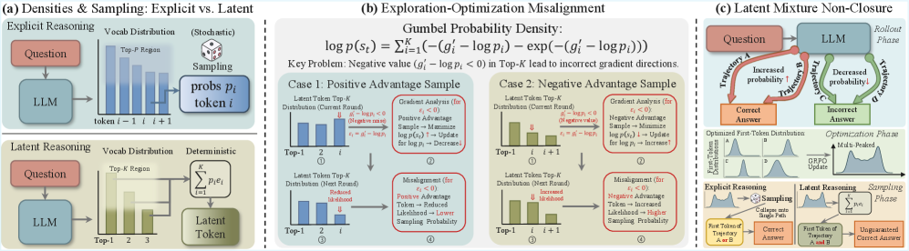
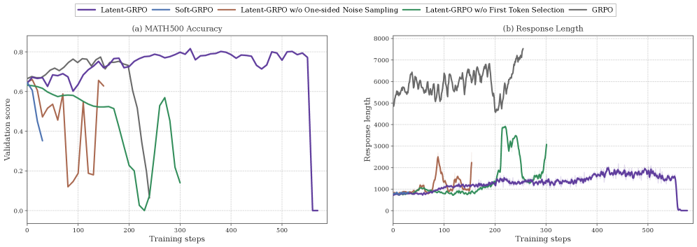
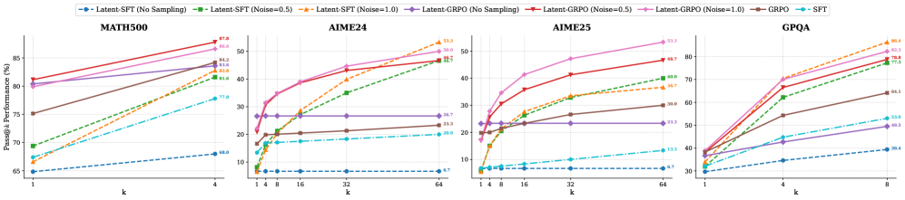